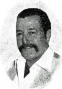

fiche familiale
*******************************************************************************
 |
Laurette Henri décède à l'âge de 89 ans. Naissance le 12 avril 1915 à Ste-Rose-de-Watford Parrain son oncle Roméo Provost, marraine sa tante Rose-Anna Nadeau. Décès le 21 juin 2004 à Val D'Or. Funérailles le 24 juin 2004 à Val-D'Or Sépulture au cimetière de Val D'Or. Marraine de Joël Beaudoin. Père: Eugène Henri Mère: Graziella Provost (sa famille) |
Mariage le 30 mars 1937 à St-Jean-L'Évangéliste de Macamic
 |
Époux: Adrien Champagne décède à l'âge de 89 ans. Naissance le 27 janvier 1914 à Ste-Clotilde-de-Horton, cté Arthabaska Décès le 22 septembre 2003 à Val D'Or. Funérailles: 26 sep 2003 à Val-D'Or Sépulture au cimetière de Val D'Or Parrain de Joël Beaudoin. Père: Ovila Champagne Mère: Adélina Brière (sa famille) |
 |
Enfant 1 Claude Champagne décède à l'âge de 72 ans. Naissance: 25 août 1937 à La Tuque Décès le 20 janvier 2010 à Val D'Or. Funérailles: 23 jan 2010 à St-Bernard de Sullivan Sépulture au cimetière de Val D'Or |
Conjointe: Françoise Grignon
Naissance: 22 avril 1944 à Guérin
Père: Ovila Grignon
Mère: Gabrielle Cloutier
Enfant 1 Marc Champagne
Conjointe: Annie Cadrin
Yanick Champagne
Sébastien Champagne
Enfant 2 André Champagne
Conjointe: Guylaine Vallée
-------------------------------------------------------------------------------
Enfant 2 Raymonde Champagne
Naissance: 8 fév 1939 à Duparquet
Mariage le 12 oct 1957 à Notre-Dame-de-Fatima de Val D'Or
| |
Conjoint: Jean-Louis Payeur décède à l'âge de 76 ans. Naissance: 26 fév 1934 à Notre-Dame-de-Ham, cté Wolfe Décès le 4 avril 2010 à Val D'Or. Funérailles: 7 avril 2010 à St-Sauveur de Val D'Or Sépulture au cimetière de Val D'Or Père: Alcide Payeur Mère: Gabrielle Lacourse |
Enfant 1 Marie-Diane Payeur
Conjoint: André Cadieux
Enfant 2 Sylvie Payeur
Conjoint: Benoit Beckers
Véronique Beckers
Caroline Beckers
Karine Beckers
-------------------------------------------------------------------------------
Enfant 3 Henri Champagne
Naissance: 29 avril 1940 à Reneault
Mariage le 18 jul 1959 à Notre-Dame-de-Fatima de Val D'Or
Conjointe: Ghislaine Coulombe
Naissance: 13 sep 1939 à Jonquière
Père: Eugène Coulombe
Mère: Aline Lebouthiller
Enfant 1 Doris Champagne
Conjoint: Gordon Anderson
Jodie-Michelle Anderson
Jay-Codie Anderson
Enfant 2 Hélène Champagne
Conjoint: William-Edward Klassen
Marshall-William
Mariage le 17 mai 1990 à Campbell River. CB
Conjointe: Carrol-Marlyn Alexander
Naissance: 2 déc 1938 à Princeton. CB
Père: Robert-Marston Alexander
Mère: Violet-Agnes White
-------------------------------------------------------------------------------
Enfant 4 Gilles Champagne
Naissance: 13 nov 1942 à Val-D'Or
Mariage le 1er jul 1967 à Notre-Dame-de-Fatima de Val D'Or
Conjointe: Gisèle Leblanc
Naissance: 27 mai 1944 à Val-D'Or
Père: René Leblanc
Mère: Alma Guité
Enfant 1 Alain Champagne
Conjointe: Diane Leblanc
Enfant 2 Luc Champagne
Conjointe: Marie-Claude Moisan
-------------------------------------------------------------------------------
Enfant 5 Robert Champagne
Naissance: 14 avril 1946 à Val-D'Or
Mariage le 5 sep 1966 à Notre-Dame-de-Fatima de Val D'Or
Conjointe: Nycole Gilbert
Naissance: 7 fév 1946
Père: Florian Gilbert
Mère: Thérèse Fiset
Enfant 1 Marie-Claude Champagne
Conjointe: Lucie Blais
Naissance: 6 jan 1945 à Québec
Père: Xavier Blais
Mère: Florence Picard
-------------------------------------------------------------------------------
Enfant 6 Pierre Champagne
Naissance: 25 juin 1949 à Val-D'Or
Mariage le 10 nov 1972 à Merritt, CB
Conjointe: Judy McPeake
Naissance: 8 août 1954 à Perron, cté Abitibi
Père: Asa McPeake
Mère: Edith Church
Enfant 1 Kimberlay-Mae Champagne
Conjoint: Jeff Lauritsen
Alex-Paige Lauritsen
-------------------------------------------------------------------------------
|  |
Enfant 7 Eddy Champagne décède à l'âge de 45 ans Naissance: 29 jan 1953 à Val-D'Or Décès: 11 nov 1998 à Val-D'Or Funérailles: 14 nov 1998 à Val-D'Or Sépulture au cimetière de Val D'Or |
Naissance: 7 déc 1961 à Val D'Or
Père: Donald Allaire
Mère: Yolande Maillé
Enfant 1 Yan Champagne
Conjointe: Hélène ?
Naissance: 7 aoû 1943
-------------------------------------------------------------------------------
Enfant 8 Lyne Champagne
Naissance: 26 mars 1957 à Val-D'Or
Mariage le 1er jul 1978 à Notre-Dame-de-Fatima de Val D'Or
Conjoint: Alain Crépeau
Naissance: 9 oct 1957 à Malartic
Père: Robert Crépeau
Mère: Cécile Clavel
Enfant 1 François Crépeau
Enfant 2 Mathieu Crépeau
-------------------------------------------------------------------------------
Enfant 8 Danielle Champagne
Naissance: 11 jul 1958 à Val-D'Or
Conjoint: Normand Gourde
Naissance: 6 jan 1956 à Berry, cté Abitibi
Père: Pierre Gourde
Mère: Reina Jones
Enfant 1 Alexandre Gourde
-------------------------------------------------------------------------------